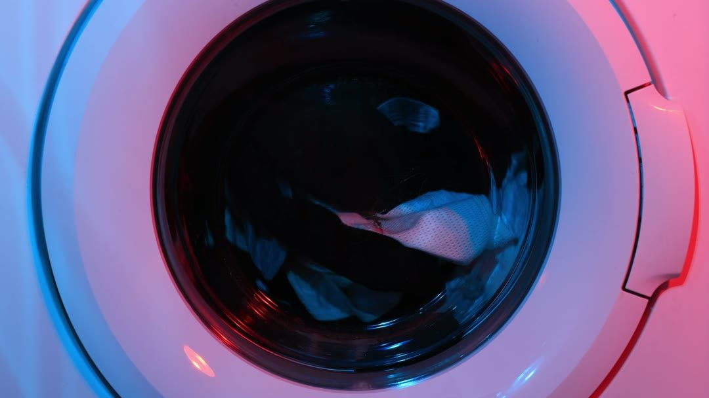
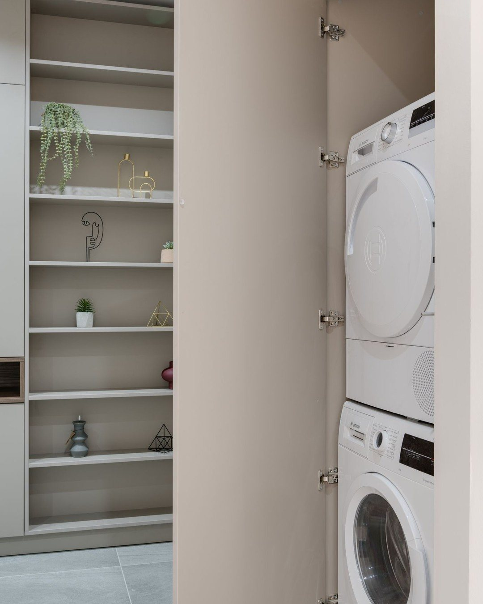
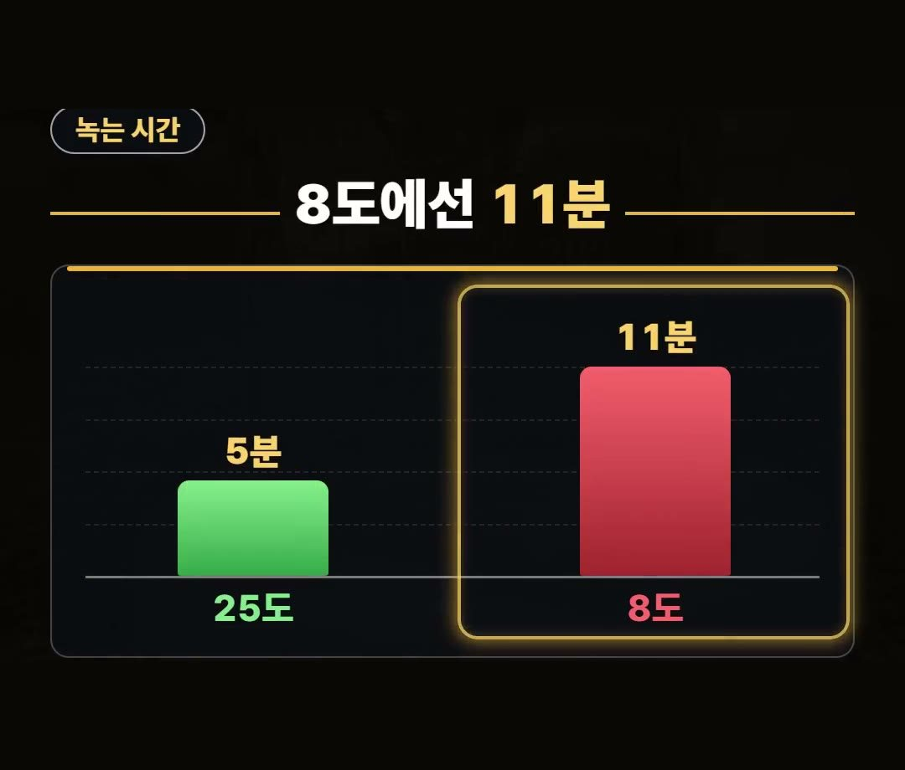
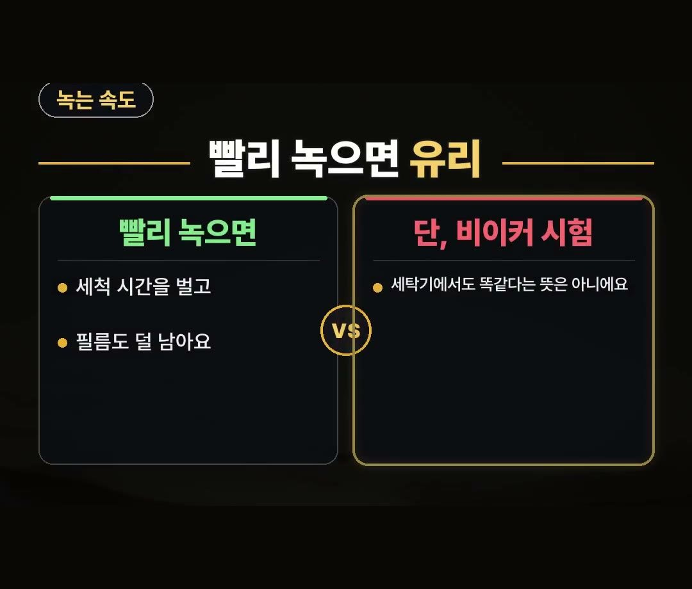

캡슐세제 안녹음, 찬물에선 2배가량 늦게 녹는다는 2026년 시험 결과
※ 이 글에는 제휴 링크가 포함되어 있으며, 링크를 통해 구매하시면 일정 수수료를 받을 수 있습니다. (가격은 같습니다)
※ 이 포스팅은 쿠팡 파트너스 활동의 일환으로, 이에 따른 일정액의 수수료를 제공받습니다.
캡슐세제를 쓰려는데 찬물에서도 잘 녹을지, 캡슐 1개로 빨래를 얼마나 할 수 있는지 헷갈리시나요?
이 글에서는 2026년 한국소비자원 시험 결과를 바탕으로 물 온도별 녹는 시간과 1회 세탁 비용 차이를 정리했어요.
캡슐세제 안녹음이 걱정되는 분이 사기 전에 볼 점도 함께 담았어요.
2026년 한국소비자원 시험(비이커 물 1리터에 캡슐 1개)에서 캡슐세제는 25도에선 평균 5분, 8도에선 11분으로 2배가량 늦게 녹았어요.
1회 세탁 비용도 1·2인 가구 4킬로 기준 최대 6배 차이가 났다는 점(시험 당시 가격 기준)까지 같이 기억하세요! 💧
캡슐세제 안녹음, 넣기만 하면 다 녹을까요?

캡슐은 세탁기에 넣기만 하면 다 녹는다고 생각하기 쉬워요.
그런데 물 온도에 따라 녹는 속도가 달라요.
한국소비자원이 캡슐세제를 시험한 내용에서 이 차이가 나타났어요.
사기 전에 알아 두면 좋을 부분만 차분하게 골라 정리했어요.
물 온도에 따라 녹는 시간이 달랐어요

소비자원은 비이커에 물을 담고 캡슐을 넣어 녹는 시간을 쟀어요.
시험 조건과 결과는 이렇습니다.
- 시험 시기: 2026년
- 시험 조건: 비이커 물 1리터에 캡슐 1개
- 25도 물: 평균 5분
- 8도 물: 11분

8도에서는 25도보다 2배가량 늦게 녹았어요.
물 온도가 낮은 쪽이 더 오래 걸렸다는 뜻이에요.
캡슐세제 안녹음 때문에 신경 쓰이셨다면 물 온도가 하나의 이유일 수 있다고 볼 수 있어요.
빨리 녹으면 유리하지만, 조건도 같이 봐요

빨리 녹을수록 세척 시간을 벌고 필름도 덜 남는다고 해요.
다만 이 결과는 비이커에서 한 시험이라서, 세탁기에서도 똑같다는 뜻은 아니에요.
그래서 이 숫자는 '물 온도에 따라 녹는 속도가 달라질 수 있구나' 정도로 받아들이시면 좋아요.
숫자만 따로 떼어 모든 세탁 상황에 그대로 적용하지는 않는 편이 좋아요.
캡슐세제 추천 전에 볼 점, 캡슐 1개가 맡는 빨래 양
캡슐세제 추천 순위를 찾아보기 전에, 먼저 고를 때 볼 점 3가지를 정리했어요.
- 포장에 적힌 캡슐 1개당 빨래 양
- 우리 집이 한 번에 빨래하는 양
- 두 숫자가 서로 맞는지
한국소비자원이 시험한 제품은 8개였어요.
이 중 2개는 캡슐 1개가 맡는 빨래 양이 4킬로 이내였고, 이보다 많이 빨면 캡슐을 더 넣으라고 권해요.
우리 집 한 번 빨래 양과 맞아야 덜 쓰게 되니, 살 때는 포장에 적힌 1개당 빨래 양부터 보세요.
가구별 1회 세탁 비용 차이
캡슐 1개가 맡는 빨래 양이 제품마다 다르다 보니, 1회 세탁 비용도 차이가 났어요.
시험 당시 가격 기준으로 제품 간 차이는 다음과 같아요.
- 1·2인 가구(빨래 양 4킬로 기준): 제품 간 최대 6배
- 4인 가구(빨래 양 7킬로 기준): 제품 간 최대 3배
그래서 가구 수와 한 번에 빠는 양을 먼저 떠올려 보는 것이 기준이 돼요.
그리고 캡슐세제는 어린이 삼킴 사고를 막는 보호 포장에 담겨 있어요.
쓰고 나면 꼭 닫아 두세요.
정리
- 캡슐세제 안녹음이 걱정된다면, 2026년 한국소비자원 시험(비이커 물 1리터에 캡슐 1개)에서 25도는 평균 5분, 8도는 11분으로 2배가량 늦게 녹았다는 점을 기억해 두세요.
- 이 결과는 비이커 시험이라 세탁기에서도 똑같다는 뜻은 아니에요.
- 1회 세탁 비용은 시험 당시 가격 기준으로 1·2인 가구 4킬로 기준 최대 6배, 4인 가구 7킬로 기준 최대 3배 차이가 났으니, 살 때는 포장에 적힌 1개당 빨래 양부터 보세요.
링크는 아래에 모아 두었어요.
📌 2026년 10월 기준 정보예요. 가격은 시기에 따라 달라질 수 있어요.
· YTN
사진·영상사진·영상: Pexels (Engin Akyurt, KATRIN BOLOVTSOVA, Kleison Leopoldino, Nilzo Farías, Ron Lach, Tima Miroshnichenko)